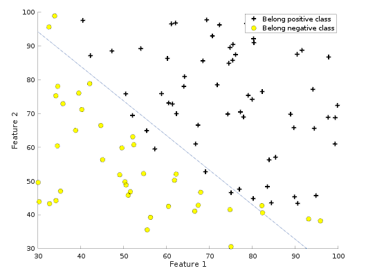
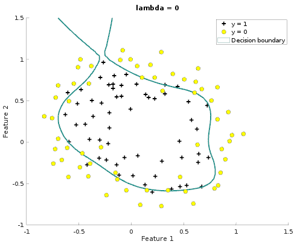

The logistic regression model is one of the most widely used binary models in the analysis of categorical data. It is a tool for representing the relation between a binary response and several predictors. Brilliant statistician David Cox has developed the logistic regression model in 1958.
Table of ContentsBasic Understanding
In logistic regression, the probability of the positive class (and obviously of the negative class) is modelled in the form of "sigmoid function", namely, "logistic function". In other words, an instance belongs to one of the class with a certain probability P and hence belongs to the other class with "1 - P" probability.
Note that, the larger the absoluve value One should note that, the larger the response/score is the higher the probability of saying that given instance belongs the positive class.
It is also equivalent to modell the logatitm of the probability ration ( the log-odds ration) as a linear function of x.
From Scratch Logistic Regression on Linearly Seperable Data
The logistic regression hypothesis defined as
where function
is the sigmoid function. After sigmoid function is implemented. Loss function is impelmented. Loss function returns the loss and gradient.

Logistic Function
.
How to find model parameters
"fminunc finds a minimum of a scalar function of several variables, starting at an initial estimate. This is generally referred to as unconstrained nonlinear optimization. The term unconstrained means that no restirction is placed on the rage of x.Fminunc is used to learn weights -W-.
After learning the parameters, the model can be used to predict whether a particular student will be admitted.

Regularized Logistic Regression
Regularized Logistic Regression is applied to the linearly unseperable data.
As Plot show that dataset cannot be seperated into positive and negative examples by a straight-line. Therefore, without 'modification' Logistic Regression will not perform wel on this dataset since Logistic Regression will only be able to find a linear decision boundary.
Feature Mapping
Feature mapping enables to expand the the dimensions of feature space,namely, creates more features, so that possibly better chance to fit model. The features are mapped into all polynomial terms of x_1 and x_2 up to the sixth power. In other words, we are able to describe an object not from 2 perspective but right now 28 different perspective.The vector of two features has been transfromed into a 28-dimensional vector. A logistic regression classifier trained on this higher-dimension feature vector will have a more complex decision boundary and will appear nonlinear when draw in our 2-dimensional plot.
Regularization parameter is chosen to be 1,Lambda=1
Be aware of Overfitting
Lambda=0
